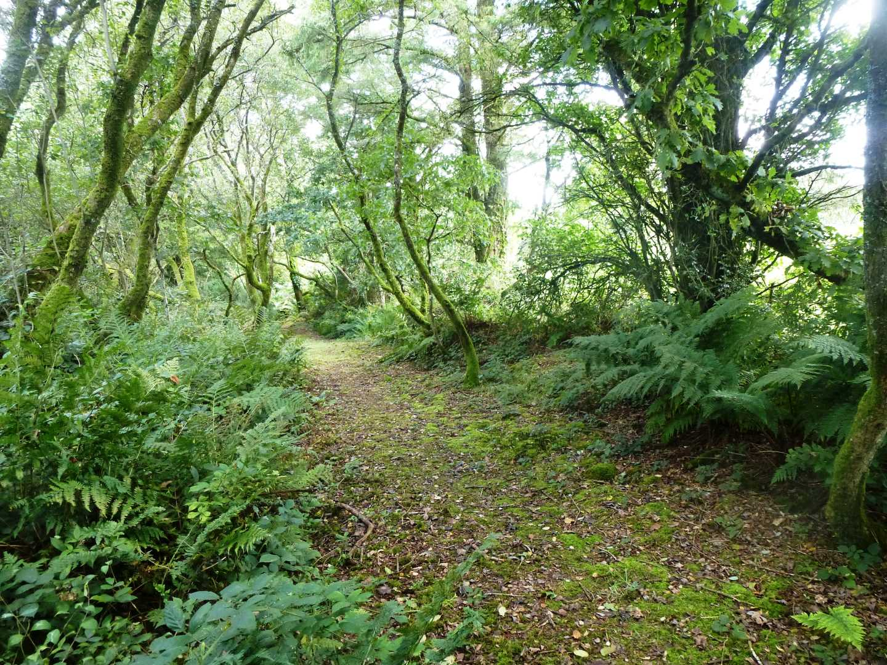
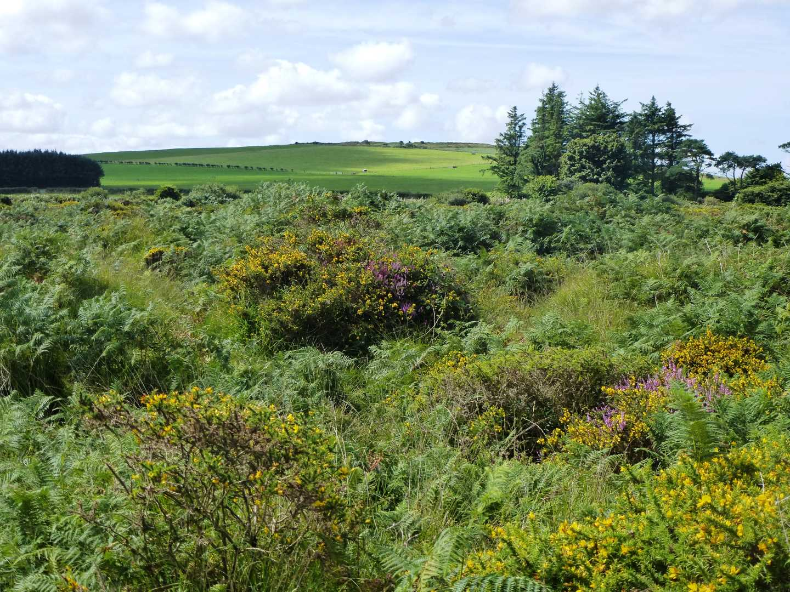

Start Ref: 946 621
End Ref: 946 621
Distance: 2.5 miles
Time: 2hrs
We leave our car in the car park at the end of the bridleway on the Southern edge of the fort itself. As we leave the car, we pass through a little kissing gate and continue up the gentle incline until we find ourselves at the fort.
If we turn left we follow the perimeter track for a short distance before coming to the entrance track on our right which will take us into the centre of the fort by walking through the three rampart banks that made up its defences. Once in the centre we see a compass plate which will highlight the 360 degree views that we are rewarded with here. From the North Coast to Brown Willy, from Roche Rock to Carn Brea. However, for me the most impressive feature is the fort itself – now maintained by the Cornwall Heritage Trust. This fort is 20 acres in size and was in occupation between 400 BC and 150 AD, but to truly appreciate this structure you need to take time to walk around the perimeter whilst looking out to the landscape and realise how the occupants would have had such a large advantage over any attacking force. Our forefathers really knew what they were doing.
After we have explored Castle-an-Dinas, we rejoin our original path and follow it along the Eastern side of the fort, before stepping off the perimeter track and going through a kissing gate (with a lovely wicker fence edging) on its North Eastern side and following the path through the bracken and alongside the barb wire fence as the path takes us gently downhill. We pass through two kissing gates and across a track before walking through a lovely grove of trees that are dressed in hanging moss (very atmospheric), at the end of which we reach another farm track.
At this track, we turn right and follow it until it appears to turn into a field on our left. Do NOT go in, the path is actually straight ahead and a little overgrown, but after about 20 meters it comes to a gate which we can go through, and then we are walking in open fields. We are going to follow the hedge on our left for about ¼ mile until it comes to a corner.
For the purpose of our walk we will turn right here and again follow the field edge BUT, for a moment we are going to go through the gate in front of us and then through the small gate which will present itself on our left. This gate leads through to Tregonetha Downs, and this is a lovely spot to stop and have a picnic. These Downs are Common Land so the farmer can graze his cattle, but I find that it is a superb spot full of heathers, furze and bracken and totally devoid of humans – wonderful.
If you have stopped to enjoy Tregonetha Downs, then we need to return through the same two gates until we return to the field, to be able to continue to enjoy our walk. We are going to again follow the left hedge as we now head South along a track which slowly becomes a lane as we pass through Castle Farm (and possibly one of the cleanest cattle enclosures I have seen). This track becomes our Bridleway which we are now going to follow until we reach the road.
This road can be busy, although when I last walked along it on a Bank Holiday weekend, it was not too bad, but still take care and walk in single file and step in on the verge whenever you can.
At the road, we are going to turn right and follow it until we reach the turning on our right which will take us up the Bridleway, which is signposted as leading to the Ancient Monument. This track leads us back up the side of the hill on which Castle-an-Dinas is situated and we find that we are back in the car park. Just by the gate there is a very informative plate which describes the history and uses of the Castle and is well worth a read.
I hope that you enjoy this walk, and savour the history of the area that we have just walked through.